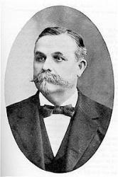

|
|
颂主新歌 |
|
1 Precious Savior, may I live 2 In my joys may I rejoice 3 Be my smiles and be my tears 4 Be my singing and my sighing |
1.惟愿救主容我活，专为我主； |
|
https://www.mred365.cn/szxg/7426.html
|
|
|
|
|


piano 颂主新歌 423 专为主活 https://youtu.be/nfoUzTb8J6A
| Text: | Only for Thee |
| Author: | E. A. Walker |
| Tune: | [Precious Saviour, may I live] |
| Composer: | J. McGranahan |
| Short Name: | Eliza A. Walker |
| Full Name: | Walker, Eliza A. |
Tune Information
| Title: | [Precious Savior, may I live] (McGranahan) |
| Composer: | James McGranahan |
| Incipit: | 35556 11212 33555 |
| Key: | A Major |
| Copyright: | Public Domai |
